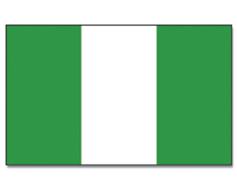

About Me
My name is Chioma. I was born in Nigeria and currently resides in Lagos with my family. I am married and has a wonderful large family. I am currently working as a sales manager in a cosmetics company. I love to excercise. I also love to meet new people.
Nigeria

Nigeria is the biggest country in West Africa. It's main source of income is crude oil. It has three major ethnic group namely Hausa, Igbo and Yoruba. Its film industry is called Nollywood. With over 200 million people, it is the most populous country in Africa. Nigeria is blessed with abundant natural resources, like oil, natural gas, minerals, and agricultural products. Despite challenges, Nigerians are known for their resilience, warmth, and hospitality. Nigeria continues to make strides in areas such as technology, entrepreneurship, and creative industries.